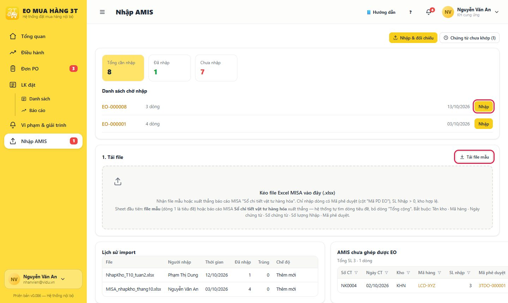
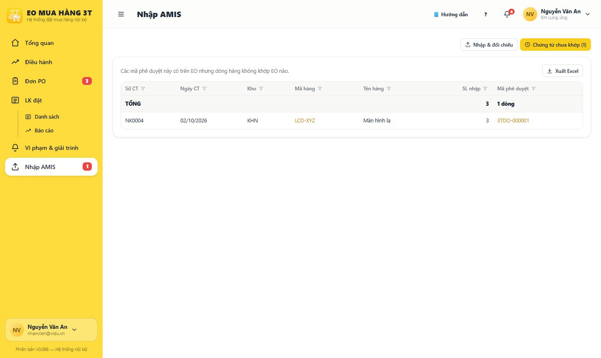

🧾 Hướng dẫn cho Kế toán
Phiếu nhập kho AMIS là nguồn duy nhất của ngày hàng về và SL đã về. Nhập muộn = đơn bị tính tồn / lỗi oan cho người đặt hàng.
Nhập AMIS mỗi ngày làm việc. Ngày chưa có lần nhập, menu Nhập AMIS hiện số đỏ.
1. Nhập phiếu nhập kho
- Xuất file phiếu nhập kho từ MISA (đúng mẫu: Tải file mẫu).
- Vào Nhập AMIS → Nhập → chọn file → xem trước.
- Xác nhận. App tự khớp từng dòng với dòng PO theo mã phê duyệt 3TDO + mã hàng (cả mã gốc và mã thay thế); tải lại file chồng kỳ cũ không bị trùng.

2. Sửa dữ liệu nhập sai
| Tình huống | Cách làm |
|---|---|
| 1 dòng sai | Hủy dòng (bắt buộc lý do) — dòng không xoá, đánh dấu hủy, có thể khôi phục. |
| Cả 1 lần nhập sai | Hủy theo lô nhập. |
| Cả kỳ lệch với MISA | Nhập chế độ Đồng bộ lại kỳ: dòng trong kỳ + kho mà không còn trong file → hủy (có xem trước). |
| Nhập lại đúng chứng từ đã hủy | Tự khôi phục. |
3. Chứng từ chưa khớp
Tab Chứng từ chưa khớp: phiếu có mã 3TDO nhưng không khớp dòng nào (sai mã hàng, sai PO, dòng đã hủy…). Xử lý cùng người đặt hàng: sửa mã trong MISA rồi đồng bộ lại, hoặc người đặt hàng sửa mã LK / thay mã tương đương trên PO.

4. Giải trình khi lỗi do nhập muộn
App đã bỏ qua lỗi nếu ngày chứng từ AMIS ≤ hạn (nhập muộn không gây lỗi oan). Lỗi còn lại do kế toán → người giải trình chọn Ai = Kế toán.